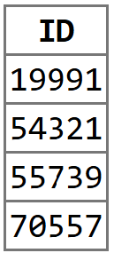
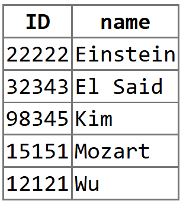

select s.ID
from student s
left outer join advisor as a on s.ID = a.s_ID
where a.s_ID is nullInformation Management Assignment 6
03/13/2025
1. JSON vs XML Websites
JSON is a lightweight, text-based data format used for transmitting data between a server and a web application. It is easier for us to read and write than XML due to its flexibility. However, it tends to take up more storage space and can be CPU-intensive. Many websites use JSON nowadays. Among them is GitHub, which sends and receives data in JSON format between its system and other applications. GitHub has many features, like managing repositories, pull requests and issues. It also relies on MySQL to store information.
XML, on the other hand, uses tags enclosed in angle brackets to mark data. Unlike relational models, it allows us to easily add new tags and create hierarchical structures. There are not that many websites these days that use XML. However, after scouring through the internet, I found a website about the UK legistlation that uses XML. The layout is like any other website, but it is set up using XML. When going into ‘inspect element,’ I could see codes like the following (just to show if the website uses XML or not):
<title xmlns="http://www.w3.org/1999/xhtml">Legislation.gov.uk</title>
<script xmlns="http://www.w3.org/1999/xhtml" type="text/javascript" src="/scripts/jquery-3.7.1.min.js"></script>
2. SQL Exercise
Find the IDs of students who do not have an associated advisor, using no subqueries and no set operations

Write an SQL query to find the names and IDs of those instructors who teach every course taught in their department (results ordered by name)
select i.id, i.name from instructor as i join course as c on i.dept_name = c.dept_name left join teaches as t on i.id = t.id and c.course_id = t.course_id group by i.id, i.name having count(distinct c.course_id) = count(distinct t.course_id) order by i.name
3. R and PostgreSQL
Loading the libraries
library(RPostgres) # Provides the Postgres() driver
library(DBI) # Generic R Database Interface
library(odbc) # Interface to ODBC driverConnecting to PostgreSQL
con <- dbConnect(
RPostgres::Postgres(),
dbname = Sys.getenv("DB_NAME"),
host = Sys.getenv("DB_HOST"),
port = as.integer(Sys.getenv("DB_PORT")),
user = Sys.getenv("DB_USER"),
password = Sys.getenv("DB_PASSWORD")
)Fetching instructor data
instructor_data <- dbGetQuery(con, "SELECT * FROM instructor")
head(instructor_data, 20) id name dept_name salary
1 63395 McKinnon Cybernetics 94333.99
2 78699 Pingr Statistics 59303.62
3 96895 Mird Marketing 119921.41
4 4233 Luo English 88791.45
5 4034 Murata Athletics 61387.56
6 50885 Konstantinides Languages 32570.50
7 79653 Levine Elec. Eng. 89805.83
8 50330 Shuming Physics 108011.81
9 80759 Queiroz Biology 45538.32
10 73623 Sullivan Elec. Eng. 90038.09
11 97302 Bertolino Mech. Eng. 51647.57
12 57180 Hau Accounting 43966.29
13 74420 Voronina Physics 121141.99
14 35579 Soisalon-Soininen Psychology 62579.61
15 31955 Moreira Accounting 71351.42
16 37687 Arias Statistics 104563.38
17 6569 Mingoz Finance 105311.38
18 16807 Yazdi Athletics 98333.65
19 14365 Lembr Accounting 32241.56
20 90643 Choll Statistics 57807.09Finding computer science instructors with salaries greater than $60,000
comp_sci_instructors <- dbGetQuery(
con,
"SELECT * FROM instructor
WHERE dept_name = 'Comp. Sci.' AND salary > 60000;"
)
comp_sci_instructors id name dept_name salary
1 34175 Bondi Comp. Sci. 115469.11
2 3335 Bourrier Comp. Sci. 80797.83Finding students with total credits greater than or equal to 50
student_data <- dbGetQuery(con, "SELECT * FROM student WHERE tot_cred >= 50")
head(student_data) id name dept_name tot_cred
1 79352 Rumat Finance 100
2 76672 Miliko Statistics 116
3 14182 Moszkowski Civil Eng. 73
4 44985 Prieto Biology 91
5 44271 Sowerby English 108
6 40897 Coppens Math 58Here is the .csv file that is converted from the entire ‘instructor’ table.